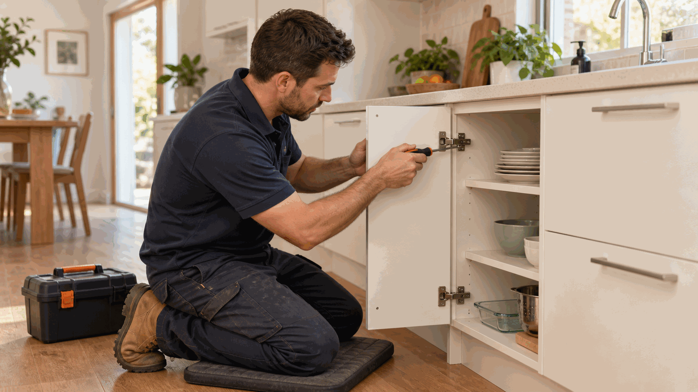

Property and scope
Room dimensions and clear photos in natural light
Repairs inside the home
Floor sanding can restore suitable timber floors by removing worn coatings, smoothing boards and preparing the surface for a chosen finish.
Describe this request
What we can coordinate
Floor sanding can restore suitable timber floors by removing worn coatings, smoothing boards and preparing the surface for a chosen finish.
Public price reference
This is Australian reference material only. It is not a Perth-specific quote or Ellis price.
A$30-110per m² including sanding and finish in the cited guide
Board condition, furniture moving, floor repairs, coating and minimum charge change price.
Prices shown are Ellis official guide prices. Contact Ellis for a tailored consultation.
What to tell us
Room dimensions and clear photos in natural light
Timber type and existing coating if known
Stains, protruding nails, loose boards, furniture and access constraints
Perth metropolitan service area
Ellis reviews requests for floor sanding within the Perth metropolitan area. Coverage still depends on the suburb, postcode, scope, timing and an appropriate provider.
Start with one request
Share the task and Perth location. Ellis will confirm the appropriate next step and who would attend.